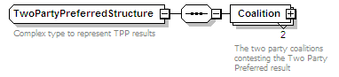
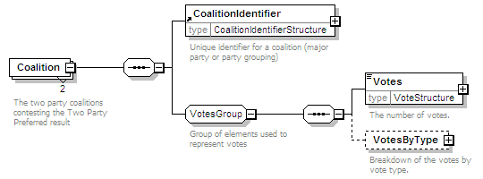

| diagram |  | ||
| namespace | http://www.aec.gov.au/xml/schema/mediafeed | ||
| children | Coalition | ||
| used by |
|
||
| annotation |
|
||
| source | <xs:complexType name="TwoPartyPreferredStructure"> <xs:annotation> <xs:documentation>Complex type to represent TPP results</xs:documentation> </xs:annotation> <xs:sequence> <xs:element name="Coalition" minOccurs="2" maxOccurs="2"> <xs:annotation> <xs:documentation>The two party coalitions contesting the Two Party Preferred result</xs:documentation> </xs:annotation> <xs:complexType> <xs:sequence> <xs:element ref="CoalitionIdentifier"/> <xs:group ref="VotesGroup"/> </xs:sequence> </xs:complexType> </xs:element> </xs:sequence> </xs:complexType> |
| diagram |  | ||||||||
| namespace | http://www.aec.gov.au/xml/schema/mediafeed | ||||||||
| properties |
|
||||||||
| children | CoalitionIdentifier Votes VotesByType | ||||||||
| annotation |
|
||||||||
| source | <xs:element name="Coalition" minOccurs="2" maxOccurs="2"> <xs:annotation> <xs:documentation>The two party coalitions contesting the Two Party Preferred result</xs:documentation> </xs:annotation> <xs:complexType> <xs:sequence> <xs:element ref="CoalitionIdentifier"/> <xs:group ref="VotesGroup"/> </xs:sequence> </xs:complexType> </xs:element> |